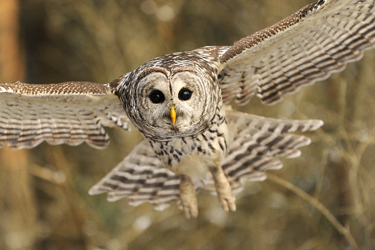

Barred owls are nocturnal large, brown and white owls. Barred owls were very common around the area of Vancouver before the massive amount of urbanization. Now they are very rare to spot but they’re sometimes seen in quiet, green parks especially at dusk or after dark. Currently a family of 4 barred owls (two adults and two babies) reside at Douglas Park and they are expected to stay until mid-July.
Listen to a barred owl's hoot: